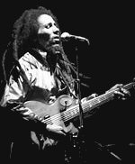
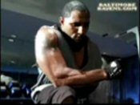
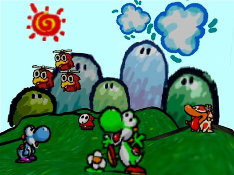

Quote
Bob Marley
"The people who are trying to make this world worse aren’t taking a day off. How can I?"


This is a significant quote to me in two ways. One is with all the damaging things you see of how the selfish concerns of mankind is killing
the enviornment and is the sole purpose for the failure of our very own economy. Also I take it in the way for motiviation in the gym. I hope to take Rugby to a far level and in order for my self to do that personally I have to work my ass of for it.
I realize I am not the only person working for this goal. They're are other guys out there working hard too and I need to take advatage of the time I have now and use it to better my self as an athelete and a person everyday.
2011 Time Capsule
Letter to my self
As I'm typing this to you future Whizzy I sure hope all your hardwork and concious thinking has paid off. Even if you're in a slump as you read this old letter just remember things always gets better.
There will always be good people to find and build a relationship with such as the fine fellow beside me now,Trevor sexy Sousely. Hopefully you're graduated from college with whatever major I decided to work with and am
making a name for myself. Make good use of your one sacrifice. If you've lost contact with Anthony Biondo, regain it. we've helped each other through so much; keep him close by always, he's family. Now I really hope I've stuck to
hitting the gym because Getting strong has always been a quality I've strived for, plus you're an adult now; gotta troll the big men now. Hopefully you're still close to our family and help dad when you can regardless of living
at home or not. Right now I plan on going to western and majoring in Computer engineering and minoring in Bio-medical engineering. I'm working out hard in preperation for the Spring rugby season and I'm surrounded with
friends who click perfectly with us in all our ways. Out of our small group I unite them together in all honesty and they all consult to me knowing I can keep a secret and be supportive.
_________________________________________________________________________________________________________________________________________________________
Happiness
Definition of happiness isn't an act of self accomplishment. Happiness has to be acheived as a group effort. No matter how accomplished you are if no one ever shows appreciation, or if those
who surround you are negative then you yourself will be brought down also. So make sure you're surrounding yourself with the right people and not someone who is just selfish and is going to use you. But at the same time you
can't just rely on others to make you happy. everyone plays a part in making others happy, but you play the biggest role in your own self happiness.

_________________________________________________________________________________________________________________________________________________________
Freedom
America. enough said dude lessgo.
_________________________________________________________________________________________________________________________________________________________
The future
I predict ten years from now all our daily items will be made into one mobile source. By this I mean I feel our phones, our keys, our credit cards, internet source etc.
will all be carried and identified by the user only. This
invention will define the owner just as much as their own name. I also predict there will be a new superpower of fuel used
thats more effecient then fossil fuels and cheaper, but in oder for the economy to work the government will
find ways to jack up prices. cars will also have a source to heat foods with.